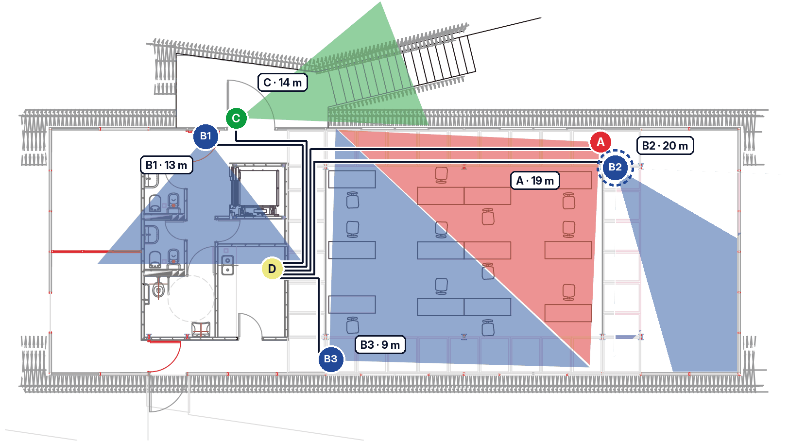
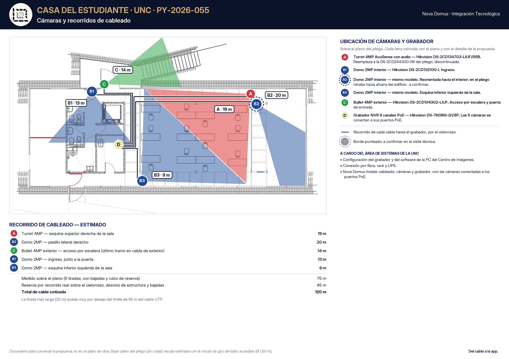

| Ítem | Cant. | Precio unitario | Subtotal |
|---|
PY-2026-055 · PROPUESTA COMERCIAL
Del cable a la app
Proyecto de Tecnológica Integral para el monitoreo por cámaras de la Casa del Estudiante de la Universidad Nacional de Córdoba: cinco cámaras conectadas a un grabador, en dos cotizaciones y dos opciones de cableado.
Resumen ejecutivo
Lo esencial, si no querés leer el resto.
Qué pide el proyecto. Monitorear la Casa del Estudiante con las cinco cámaras y el grabador del pliego, y que el Centro de Imágenes de la universidad pueda ver y grabar todo.
Qué proponemos. Instalar el sistema completo: el cableado de las cinco cámaras hasta el grabador, las cámaras y el grabador, con cada cámara conectada a su puerto PoE. Dos cotizaciones —A, solo la instalación, y B, la instalación más los equipos— y dos formas de cablear, que se eligen una u otra: Opción 1, con caño semirrígido nuevo, y Opción 2, por la cañería que ya existe.
Lo que queda a cargo del área de Sistemas de la UNC: la configuración del grabador y del software de la PC del Centro de Imágenes, la conexión por fibra, el rack y la UPS.
Inversión. Todos los valores con IVA incluido:
| Opción 1 · caño semirrígido | Opción 2 · cañería existente | |
|---|---|---|
| Cotización ASolo instalación | U$D 683 | U$D 384 |
| Cotización BInstalación + equipos, disco 4TB | U$D 1.999 | U$D 1.700 |
| Cotización Bcon disco 6TB | U$D 2.105 | U$D 1.806 |
Los materiales de cableado (caño, cable, fichas, cajas) los compra la UNC: están listados en la sección Cableado, según la opción elegida.
Próximo paso. Elegir la cotización y la opción de cableado en la sección Inversión, y coordinar la visita técnica para confirmar los recorridos.
Alcance
El pliego menciona la configuración del sistema. Esta propuesta cubre la instalación física; la configuración queda a cargo del área de Sistemas de la UNC.
Plano
Sobre el plano del pliego: cada cámara con su letra, el recorrido de cada cable hasta el grabador (D) y los metros estimados de cada tirada. La cámara B2 se reorienta hacia el interior; la marcada con borde punteado se confirma en la visita técnica.


El plano del pliego no tiene cotas: la escala se tomó del círculo de giro del baño accesible (1,50 m). Medidas sobre el plano, las cinco tiradas suman 75 m; se cotizan 120 m para cubrir el recorrido real por el cielorraso, los desvíos y las bajadas. La más larga, 20 m, queda muy por debajo del límite de 90 m del cable de red.
01 — Sistema
Las cámaras y el grabador del pliego, con dos ajustes que explicamos abajo. En la Cotización B los provee Nova Domus; en la A, la UNC.
Cámara A. La DS-2CD2443G0-IW está discontinuada: la reemplazamos por la DS-2CD1347G3-LIUF/SRB, de la misma línea de detección inteligente, 4MP y con audio.
Cámaras B. En el pliego figuraban con el mismo modelo que la A, pero la descripción es otra: 2MP, sin audio y sin detección. Cotizamos el domo 2MP que corresponde a esa descripción, para las tres interiores.
👆 Tocá cada equipo para ver el detalle
02 — Sistema
Dos formas de llevar el cable de cada cámara hasta el grabador. Se elige una u otra: no se suman. En las dos, los materiales los compra la UNC y Nova Domus los instala.
Caño semirrígido nuevo fijado sobre o bajo el cielorraso, con el cable adentro. Sobre el cielorraso hay lana de vidrio suelta: el caño deja el trabajo prolijo, protegido y fácil de revisar. Por eso descartamos el cable suelto sin caño.
Materiales que compra la UNC:
El cable de red va por la cañería que ya tiene el edificio, sin caño nuevo. Es más económica y supone que esa cañería llega libre y continua desde cada cámara hasta el grabador: lo confirmamos en la visita técnica.
Materiales que compra la UNC:
Si en la Opción 2 algún tramo de la cañería está obstruido o no llega, se informa antes de seguir y ese tramo se resuelve como en la Opción 1, cotizado aparte.
03 — Inversión
Elegí la cotización y la opción de cableado: el detalle y los totales se recalculan. Los equipos llevan su IVA incluido, según la alícuota real de cada producto; la instalación se cotiza más IVA 21%.
Cotización
Cableado — una u otra
Disco
👆 Tocá cada rubro para ver el detalle ítem por ítem
| Ítem | Cant. | Precio unitario | Subtotal |
|---|
| Concepto | Precio |
|---|
Cifras en dólares, sin centavos. Tipo de cambio de referencia: oficial del Banco de la Nación Argentina, vendedor, del 30/10/2026 (ARS 1.560); se paga al del día del pago efectivo.
04 — Ejecución
Los equipos se pagan por anticipado, antes de la compra. La instalación se certifica según el avance real del trabajo en la Casa del Estudiante.
05 — Condiciones
👆 Tocá cada condición para leerla
Validez de 15 días corridos desde la fecha de emisión. Todos los precios están expresados en dólares estadounidenses. La referencia de conversión a pesos es la cotización oficial del Banco de la Nación Argentina, tipo vendedor, del día del pago efectivo (al 30/10/2026: ARS 1.560).
Nova Domus instala el cableado, las cámaras y el grabador, y deja cada cámara conectada a su puerto PoE. No incluye la configuración del grabador, la configuración del software en la PC del Centro de Imágenes, la conexión por fibra, el rack ni la UPS: quedan a cargo del área de Sistemas de la UNC. La instalación del grabador y de su disco no tiene cargo.
En la Cotización A, la UNC provee las cámaras, el grabador y el disco, y los entrega en la Casa del Estudiante antes de la instalación. Si los modelos difieren de los de esta propuesta, se revisa que sean compatibles con la alimentación PoE del grabador antes de empezar.
En las dos cotizaciones, los materiales de cableado los compra la UNC, según la lista de la opción elegida (sección Cableado), y tienen que estar en obra antes de empezar. Las cantidades son estimadas y se confirman en la visita técnica; si hace falta, asesoramos en la compra.
Se cotizan 120 m de cable, estimados sobre el plano del pliego, que no tiene cotas. Se confirman en la visita técnica. Si el recorrido real necesitara más, el excedente se cotiza al mismo valor por metro y se aprueba antes de ejecutarlo.
El caño se fija sobre o bajo el cielorraso, según lo que permita cada tramo. Sobre el cielorraso hay lana de vidrio suelta: se trabaja con el caño para no dejar cable suelto en el aislante. Hace falta poder acceder al entretecho por placas desmontables o tapas de inspección.
Supone que la cañería existente llega libre y continua desde cada cámara hasta el grabador, con lugar para el cable nuevo. Si algún tramo está obstruido o no existe, se informa antes de seguir y se resuelve como en la Opción 1, cotizado aparte.
Cotización B: los equipos se abonan al 100% por anticipado, antes de la compra. En las dos cotizaciones, la instalación se certifica según el avance real del trabajo, con su IVA. Se paga en pesos, al tipo de cambio oficial del Banco de la Nación Argentina, tipo vendedor, del día del pago.
Se emite Factura B. Los equipos llevan su IVA incluido, según la alícuota real de cada producto (21% o 10,5%), y la instalación se factura con IVA 21%, ya sumado en el total.
El personal de Nova Domus que trabaja en la obra está cubierto por un seguro de accidentes personales. Si la UNC lo requiere, presentamos la póliza antes del ingreso, con cláusula de no repetición a su favor. Si la UNC exige otras coberturas, se cotizan aparte.
La instalación lleva unos tres días hábiles con una cuadrilla de dos personas, una vez que los materiales están en obra. Los horarios de trabajo se coordinan con la Casa del Estudiante, con acceso a los ambientes y al entretecho.
Esta propuesta no incluye trabajos eléctricos, así que no aplica la base de cotización de Boca Completa. Las cámaras se alimentan desde el grabador por el mismo cable de red (PoE); el grabador necesita un tomacorriente en su ubicación, que queda a cargo de la UNC junto con el rack y la UPS.
Cotización B: los equipos son de importación y se compran contra pedido firme. Una vez emitida la orden de compra no admiten cancelación ni devolución.
Este es un proyecto aproximado: surge del plano del pliego, con supuestos sobre los recorridos y la cañería que se confirman en la visita técnica antes de empezar.
Las visitas posteriores a la entrega que se requieran por causas ajenas a la instalación —cambios hechos por terceros, configuración, equipos nuevos a sumar— se cotizan aparte.
Doce meses de garantía sobre la instalación desde la entrega documentada: si una cámara deja de conectar por el cableado o el montaje, se resuelve sin costo de mano de obra. En la Cotización B, los equipos mantienen además la garantía de su fabricante, que gestiona Nova Domus. Al terminar se entrega el plano con los recorridos reales y el etiquetado de cada cable.
Por qué nosotros
En una instalación de cámaras, el que tira el cable, el que monta las cámaras y el que conecta el grabador suelen ser proveedores distintos. Cuando una cámara no da imagen, cada uno señala al otro, y esa coordinación es la fuente real de las demoras.
Nova Domus es uno solo para toda la instalación física: cableado, cámaras y grabador, con cada cámara conectada y verificada en su puerto. La configuración la hace el área de Sistemas de la UNC, que conoce su red y el Centro de Imágenes: le entregamos todo conectado, etiquetado y documentado, para que configure sobre una base prolija.
| Con Nova Domus | Instalación tradicional | |
|---|---|---|
| Proveedores a coordinar | Uno, para cableado, cámaras y grabador | Dos o tres |
| Responsable si una cámara no conecta | Nova Domus | A definir entre las partes |
| Equipo de trabajo | Propio, coordinado por Nova Domus | Subcontratado por rubro |
| Garantía | 12 meses sobre la instalación | Por proveedor |
| Documentación de entrega | Plano con recorridos y cables etiquetados | Habitualmente no |
Respaldo
Cada marca está elegida por un motivo concreto, no por catálogo.
👆 Tocá la marca para ver por qué la elegimos
Hikvision Certified Partner desde 2025 — uno de los logros más grandes del año para Nova Domus. Trabajamos su línea AcuSense (detección inteligente) y AXPro/AXHome (alarma) por la relación estabilidad/precio y el soporte de repuestos en Argentina.
Doce meses de garantía sobre la instalación desde la entrega documentada. Si una cámara deja de conectar por el cableado o el montaje, lo resolvemos sin costo de mano de obra.
FAQ
Las dudas más comunes sobre esta propuesta.
👆 Tocá cada pregunta para ver la respuesta
Porque el grabador se conecta a la red de la universidad y al Centro de Imágenes, que administra el área de Sistemas de la UNC. Lo más ordenado es que la configuración la haga quien administra esa red. Nosotros dejamos todo instalado, conectado, verificado y documentado.
La DS-2CD2443G0-IW del pliego está discontinuada. La DS-2CD1347G3-LIUF/SRB cumple lo que pide el pliego: 4MP, lente de 2,8 mm, PoE, detección de personas y audio. El audio de dos vías y el stock los confirmamos con el distribuidor antes de la compra.
En el pliego las B figuran con el mismo modelo que la A, pero se describen como 2MP, sin audio y sin detección. Cotizamos el domo que corresponde a esa descripción, que además es más económico.
La Opción 2 es más económica, pero depende de que la cañería existente llegue libre hasta el grabador. La Opción 1 no depende de lo que ya hay: el caño nuevo deja el cable protegido y ordenado. En la visita técnica revisamos la cañería y les decimos si la Opción 2 es viable.
Depende de la configuración que defina Sistemas. Como referencia, grabando las cinco cámaras las 24 horas, el de 4TB rinde del orden de un mes y el de 6TB, alrededor de un mes y medio. Grabando solo cuando hay movimiento, rinden bastante más.
Las cámaras se alimentan desde el grabador, por el mismo cable de red. Con la UPS que provee la UNC, el grabador y las cámaras siguen funcionando durante un corte.
No. Las cámaras graban en el grabador, sin abono de nube ni licencias.
Próximo paso
Con la conformidad coordinamos la visita técnica, y con los materiales en obra, los tres días de instalación.
Queda instalado, conectado y documentado.